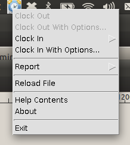

| [ < ] | [ > ] | [ << ] | [ Up ] | [ >> ] | [Top] | [Contents] | [Index] | [ ? ] |
| 4.1 UI Configuration | ||
| 4.2 Clocking In With the UI | ||
| 4.3 Clocking Out With the UI | ||
| 4.4 Generating Reports With the UI | ||
| 4.5 Getting Help | ||
| 4.6 The About Dialog | ||
| 4.7 Exiting |
The System tray user interface timeclockj-gui enables users to
clock in and out of tasks, create new projects and tasks, via a simple
interface. The application sits in the windowing ’tray’, known as the
Task Bar in Windows as a clock icon. The following image shows
timeclockj running in the Task Bar on Windows as a small
clock:

…and on Ubuntu Linux:

To access the main functions of the application, a right-click is made on the icon which then brings up a menu.
When the application first starts, it determines if a clock is
already in progress (i.e. has not been clocked out). The user interface
only permits a clock-in to occur if a clock-out was the last line
detected in the timeclock file. Likewise, a clock-out
can only occur if the last line in the file was a clock-in.
The following image shows the basic user interface displayed when the user right-clicks on the clock icon:
| [ < ] | [ > ] | [ << ] | [ Up ] | [ >> ] |
This document was generated by rich on April 1, 2013 using texi2html 1.82.